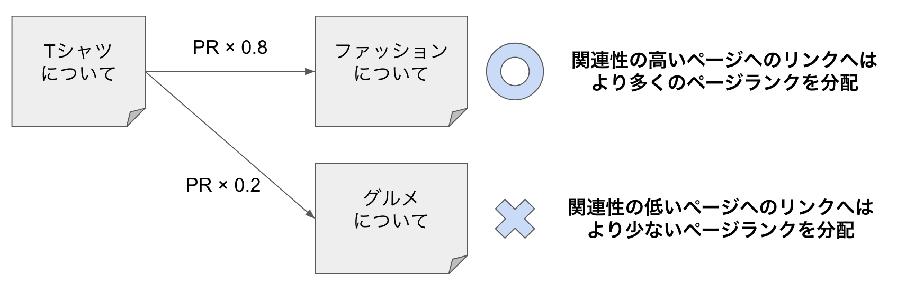
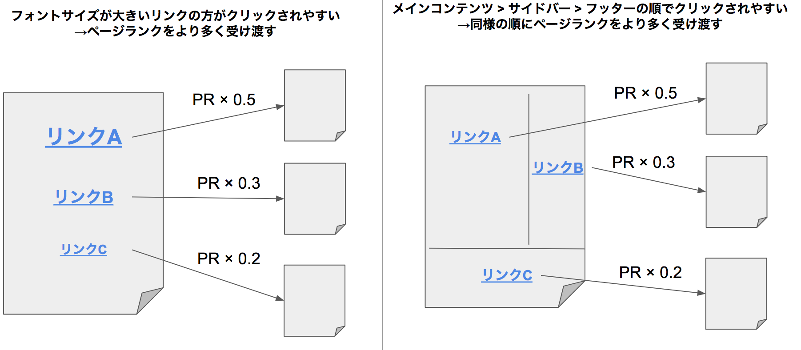
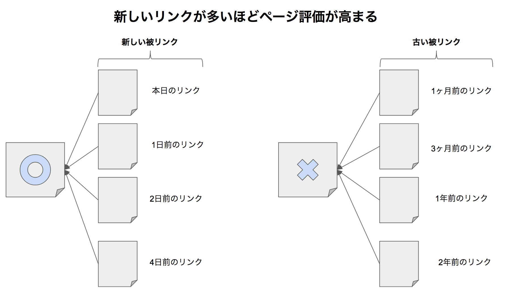

ブランドSEO
ブランド：指名検索、外部評価の指標、被リンクの評価要素、リンクビルディングの手法、SNSでのリンク獲得、レビュー・サイテーション
実践：被リンクの4つの評価要素
被リンクは、a要素によって明示的にWebページと紐付けられる引用です。rel="nofollow"が設定されたリンクは基本的に評価対象外ですが、Googleが評価すべきと判断した場合は、nofollowリンクでも評価対象になり得るとされています。
被リンクの評価要素として、主に次の4つが挙げられます。これらは並列の関係ではなく、1つ目の「ページランク」がすべての基礎を形成しています。
①リンク元のページ評価（ページランク）
ページランク（PageRank）
被リンクをもとに算出される、ページの品質ランク。「量：被リンク数が多いほど価値が高まる」「質：高品質なページからの被リンクほど価値が高まる」という2つの観点で構成されます。Googleの創業者が発表した論文で示された、被リンク評価の基礎となる考え方です。
ページランクの計算では、リンク元ページの評価をそのページからの発リンク数で割った値が、リンク先に分配されるイメージで説明されます。あわせて、他サイトからリンクを受けていないページにも一定の「初期パワー」が与えられる仕組みになっており、この初期パワーがあることで、被リンクの少ないページも適切に評価される設計になっているとされています。この分配の様子は、論文の中で「ランダムにリンクを辿るユーザー」に例えられていました。
ただし、現在のアルゴリズムはこの単純なランダムモデルから進化しており、「リーズナブルサーファーモデル」と呼ばれます。すべての発リンクに均等に評価を分配するのではなく、ユーザーが実際にクリックしやすいリンクに、より重点的に評価を分配する合理的なモデルです。

②リンク元ページにおけるリンクの掲載状況
リーズナブルサーファーモデルでは、次のような掲載状況をもとに、クリックされやすさが判断されていると考えられています。
- アンカーテキストのフォントサイズ・色・書式（太字など）
- リンクの出現箇所（ファーストビュー、フッター、サイドバーなど）
- アンカーテキストの単語数
Googleのマット・カッツ氏も、サイドバーやフッターなど全ページ共通のリンク（サイトワイドリンク）の価値は、メインコンテンツ内のリンクよりも低いと述べています。ただし、これはあくまでページ内での相対的な評価の差であり、「アンカーテキストを大きくすれば評価が上がる」といった小手先の対応をしても意味はありません。

③リンク元とリンク先のコンテンツ・文脈的な関連性
被リンク元のコンテンツと関連性が高いページへのリンクほど、より重点的に評価が分配されると考えられています。ユーザーにとって、閲覧中のコンテンツと関連性の高いページへのリンクが有益だからです。単純なコンテンツの関連性だけでなく、そのリンクが置かれている文脈（前後の文章がどのような話題か）も評価に含まれるとされ、これは自然言語解析技術の発展があって初めて実現した評価方法だと考えられています。
④リンクが張られてからの経過時間（リンクエイジ）
リンクエイジ
被リンクが初めて張られてから（検索エンジンが認識してから）の経過時間。新しいリンクを継続的に獲得しているページを高く評価し、コンテンツの陳腐化を判別する手がかりの一つとして使われていると考えられています。

「新しいリンクが多いほど評価される」という仕組みを逆手に取った、人工的な被リンクの急増はスパムシグナルとして認識される可能性があります。正当なサイトの被リンク獲得ペースは緩やかであり、時事性のあるトピックでもないのに被リンクが不自然に急増した場合は注意が必要です。